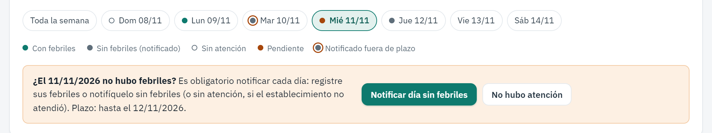
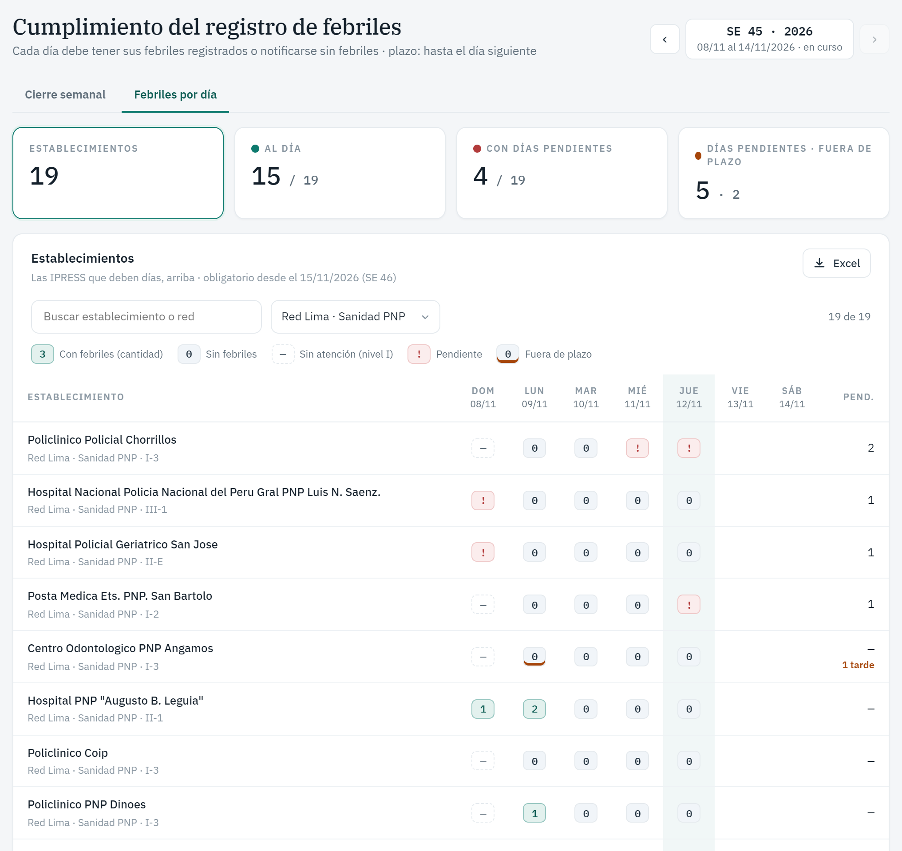

Desde el domingo 15 de noviembre de 2026 (SE 46), cada IPRESS debe dar cuenta de todos los días en el registro de febriles. Antes se había indicado que bastaba con el cierre semanal. Ahora debe quedar constancia diaria para distinguir un día sin febriles de un día en que no se registró.
Para las IPRESS (registradores)
Cada día debe quedar en una de estas situaciones:
Hubo febriles: se registran como siempre. No hay que hacer nada más.
No hubo febriles: en la hoja de ese día, pulse «Hoy no hubo febriles», o «Notificar día sin febriles» si es un día anterior.
No hubo atención (solo IPRESS de nivel I):
Los domingos y feriados nacionales quedan marcados automáticamente.
Si otro día el establecimiento no atendió, pulse «No hubo atención».
Los hospitales y las IPRESS de nivel II y III reportan todos los días.
Plazo: hasta el día siguiente. Después se acepta igual, pero queda como fuera de plazo.
Correcciones: si registra un febril en un día notificado «sin febriles», esa notificación se anula sola. Para anularla manualmente, use Anular.
Cierre semanal: no se puede cerrar la semana mientras falte un día, y el sistema indica cuáles faltan. En la práctica, la semana se cierra desde el sábado.

Hoja de febriles de la IPRESS. Cada día muestra un indicador de color, explicado en la leyenda. En un día pendiente aparecen los botones «Notificar día sin febriles» y «No hubo atención»; este último, solo en el nivel I.
Para administradores y jefes de red
En Notificación semanal → pestaña «Febriles por día» hay un cuadro con una fila por IPRESS y una columna por cada día de la semana epidemiológica. Las IPRESS con días pendientes aparecen primero.

Cuadro «Febriles por día». En cada celda, un número es la cantidad de febriles, 0 es sin febriles, — es sin atención y ! es pendiente. Un borde naranja indica que se notificó fuera de plazo.
Se puede filtrar por red, por estado y por nombre de IPRESS, y descargar en Excel.
El jefe de red ve solo las IPRESS de su red.
El administrador puede abrir el día de una IPRESS haciendo clic en la celda, y anular notificaciones si hace falta.